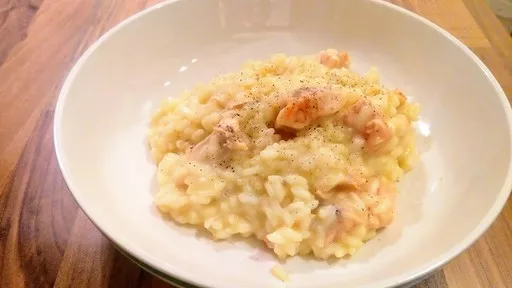

Salmon & saffron risotto

Servings: 4
Total: 40 mins
Ingredients
- 75 g butter
- 1 onion, finely chopped
- 275 g risotto rice, rinsed and drained
- 1⅕ l hot chicken stock
- 10 strands saffron, left to steep for 10 minutes in a small bowl of hot water
- 80 g freshly grated Parmesan cheese
- 350 g salmon fillet, finely sliced
- salt and freshly ground black pepper
Instructions
- Heat half the
butter75 g
in a saucepan and fry the onion1
until softened. Add the rice275 g
and stir for about 4 minutes. Add the stock1⅕ l
, ladle by ladle, stirring over a low heat until all the water is absorbed. Add the saffron10 strands
and its soaking water. It should take around 20 minutes for all the water to be absorbed and for the risotto to be creamy and moist.
- Now stir in the remaining
butter75 g
and the Parmesan80 g
. As soon as this is melted into the risotto, add the salmon350 g
slices. Stir very gently and cook for 2 more minutes until the fish is just cooked through.
- Remove from the heat immediately and season with salt and pepper to taste. Serve hot with a twist of sharpening black pepper too.
Pimp My Rice
Short Link
Long Link